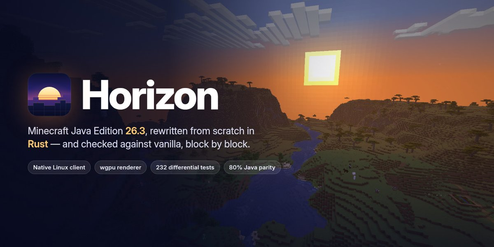

最近看到一个挺有意思的项目：Horizon，有人开始用 Rust 重写 Minecraft 了。
点进官网，第一感觉是：这网站怎么比 Minecraft 官网还 Minecraft。
石头纹理的背景、像素风景，再配上熟悉的方块世界截图，还没开始看项目介绍，就已经有点想进游戏挖两块土了。至少在网站的氛围上，作者挺懂 Minecraft 玩家的。

看着这些画面，我有点好奇，也有点困惑。
现在复刻软件、复刻游戏的项目越来越多。把一个复杂系统重新做出来，当然很厉害。可等“厉害”说完，还是想问一句：然后呢？玩家为什么要换过去？
三周，四千多次提交
Horizon 从 10 月初出现在 GitHub 上，到现在也就三周左右，已经有了四千多次提交。
翻看早期记录，它最初还是一个 Minecraft 反编译与 Rust 优化实验室。没过几天，Rust 重写分支就合入了主线，已经能生成世界、挖矿、合成、使用容器和保存存档。现在连启动器、服务端、模组系统和官网都做起来了。

开发速度确实很快。项目也交代了怎么做到的：Ludovic Marie 负责方向与发布，大部分代码由他运行的 Claude Agent 和贡献者使用的 AI 工具编写，也有人手写代码。每一行代码并不都会经过人工阅读，项目很依赖自动化检查与原版对照测试。
这让提交次数多了另一层含义：代码产出的速度提上来了，检查和维护能不能跟上，就变得更重要了。
它要的是原版世界，连生成结果也想一样
Horizon 面向的是 Minecraft: Java Edition 26.3。它想还原原版，也就是 vanilla 的行为，包括规则、存档和世界生成。
这里的 vanilla 不是一种特殊世界模式，而是没有额外模组修改的原版。它的目标包括普通世界的生成，并非只做一张看起来像 Minecraft 的方块地图。
如果只是做一款方块游戏，山长什么样、村庄放在哪里，都可以自己设计。Horizon 给自己出的题更难：同一个输入，尽量交出和原版一样的结果。
这件事也有实际用途。玩家已经熟悉的种子、存档和玩法，只有在规则足够一致时才容易延续。改写语言以后，如果连红石装置和世界生成都变了，迁移成本就会落到玩家身上。
它用的方法叫差分测试：让 Horizon 和真正的原版接受相同输入，再比较输出。官网的世界生成状态表称，测试覆盖三个维度、225 个结构点位、2,352 个完整区块，这些样本的比较结果一致。
但网页上的“100%”要连着旁边的小字读。项目自己也说，这只代表被测试实际比较到的部分，无法证明所有种子、所有位置、所有操作都没有差异。
是的，要先启动一次原版
这个问题可以确认。安装文档要求：拥有 Minecraft Java Edition 26.3，并且先启动一次，让启动器把需要的文件下载到本机。用官方启动器或 Prism 等兼容启动器都可以。
之后由 Horizon 的启动器进行一次 Prepare，从你的本地安装中准备所需资源。项目声明自身不附带 Minecraft 的代码、素材和数据，需要玩家自己的合法副本。
因此，看到熟悉的方块和生物，不意味着作者又把整套美术资源画了一遍。
首次准备会用到 Java 25。FAQ解释说，它会运行原版的数据生成器，读取诸如物品默认组件等数据。准备好以后，Horizon 的游戏和服务端本身不需要 Java。
这里还有一点文档更新的时差：安装页仍写着 JDK 25，但最新主线的准备工具说明已经区分，发行包预编译了导出程序，只需要 Java 运行时；开发或修改导出程序才需要完整 JDK。不能据此要求每个玩家都另外装一套开发环境。
所以，这套流程也比“拿几张贴图来用”复杂一些。运行时代码重写了，初始化仍然借助原版提供的数据。
看到这里，我原本想感叹一句：看来玩法可以各种复刻，创意还是没法直接复刻啊。
想了想，这句话更适合留作疑问。复用原版素材，能说明它依托于 Minecraft 已经建立的世界，却不能证明作者缺乏创意。Horizon 选择的任务就是兼容原版，本来就会主动克制玩法上的变化。
让我在意的是另一件事：AI 把“照着已有目标重新实现”的门槛降下来以后，我们会得到多少值得长期使用的新东西？
除了重写，还加了些什么？
按项目自己的介绍，Horizon 希望在保留原版玩法的同时，启动更快、少占些内存，运行也更流畅。这些都是比“换成 Rust”更容易让人感受到的好处。
它还把一些 Java 原版没有内置的功能加了进来，比如画质预设、更远的地形显示、原生手柄支持，以及可选的小地图、画面缩放和动态光源。想和朋友一起玩，也有邀请码分享世界的功能。对不想折腾模组的人来说，这些开箱就能用的小功能，可能比底层用了什么语言更有吸引力。
至于性能，项目用 Rust 原生运行，把区块生成、光照和网格处理放到工作线程，也在减少渲染调用。实际效果如何，还得看测试。
Horizon 已经发布了客户端对比数据，并非只有语言层面的口号。它安排相同机器、世界种子、视距与相机路线进行测试，也公开说明了条件限制。
例如，RTX 4080 桌机上，视距 12 时 Horizon 的平均帧率是 2,993，Java 原版是 2,600；视距到 32，结果变成 Horizon 672、Java 849。对应的游玩内存则是 1.6 GB 和 3.3 GB，Horizon 更省。
这组数据比“Rust 吊打 Java”有意思得多：内存优势和帧率优势，并不总是一起出现。
还要记住，这些是项目自己测的，次数有限，部分机器测试时还运行着其他任务。官网硬件选择器给出的部分结果属于估算，也不能当成那台硬件已经实测过。
服务器方面，它还拿自己与原版、Paper、Fabric 加 Lithium 做了同负载对比。报告中 Horizon 有内存和部分负载表现的优势，Paper 的平均 tick 时间却在每个人数档位都更短。
性能值得继续看，但玩家已经有优化模组和服务端可选。对一个已有生态而言，新实现最终需要回答的，是相比这些方案还能多带来什么。
让 AI 自己进游戏挖矿
Horizon 有一套 horizon-ctl，可以读取游戏状态、找方块、寻路、挖掘、操作背包、截图和查看日志。同一套命令还能通过 MCP 提供给 Agent。
这样一来，AI 不用只盯着屏幕猜发生了什么，也能直接拿到结构化的状态，再发出游戏操作。客户端指南介绍了这套接口。
挺有意思的是，这么年轻的项目，就已经把 Agent 支持做进去了。现在开发软件，AI Agent 也成了优先考虑的使用者：除了人用起来顺不顺手，还要考虑它能不能读懂状态、调用功能。在 Horizon 这里，玩家还在研究怎么安装，Agent 进游戏砍树的接口就已经准备好了。
Mojang 官方的 Minecraft Creator Tools 也有 MCP，主要帮人制作和测试基岩版的附加内容，也能操作游戏会话。Horizon 则更偏向让 AI 像玩家一样行动：走到树边、砍木头、整理背包，再继续下一步。两者各有侧重，没必要争谁的功能更多。
这部分倒是让我看到了一个有意思的方向：游戏除了给人玩，也可以提供方便程序观察与操作的接口。用于自动化测试、复现问题，甚至研究 Agent 能力，都有想象空间。具体能做到多可靠，还得拿任务去试。
跑得很快，也已经碰到了需要返工的事
Horizon 也已经遇到了返工：一位 Iris 开发者指出它的 shader pack 代码参考了 Iris 源码，项目随后移除了这部分实现，准备重新做。
这让我想起之前做 EnvMate 的时候。发布之后，我才发现网上已经有产品的界面和它非常相似。AI 做出来的设计，原来早就有了相似的样子，只是我当时不知道。
当然，界面相似不代表就能确定 AI 抄了谁。但它到底参考了什么，又把哪些见过的东西带进了设计里，我们其实也不清楚。东西做出来很快，发现这些问题却可能要等到发布以后。
老玩家搬得过去吗？
玩了这么多年 Minecraft，大家早就有了自己的环境：建到一半的世界、装习惯的模组、常去的服务器，还有一起玩的朋友。换个客户端容易，把这些一起搬过去就没那么简单了。
存档算是有希望接上的一部分。Horizon 使用原版存档格式，项目也提供了旧世界的升级支持。但模组就麻烦了：Fabric、Forge、NeoForge 的 Java 模组不能直接在里面运行。它能接续部分素材和数据，模组里的机器、逻辑和各种特殊玩法，却不会跟着自动搬过来。熟悉的整合包，很可能换过去就不是原来那套体验了。模组说明也承认了这些限制。
联机还有一道坎。Horizon 客户端目前不能登录 Microsoft 账号，因此进不了需要账号验证的服务器，现阶段主要能加入离线模式的服务器。对于已经有固定服务器和朋友的玩家，这比帧率高了多少更影响选择。
Horizon 也重写了服务端，并提供了开服文档。想自己开服和朋友一起玩的，也可以试试这套 Rust 服务端，原版 26.3 客户端同样能加入。
重写之后呢？
我对 Minecraft 的生态了解不多，只是家里小孩特别喜欢玩，我自己平时玩的也就是国内网易代理的版本。Horizon 能不能吸引老玩家换过去，我说不上来。不过，几周时间做到这一步，确实让我挺好奇。
不过，看了这么多 AI 复刻项目，我还是会好奇：把熟悉的东西重新写一遍之后，还能带来什么？更省资源、更方便开服，或者让 Agent 陪着一起玩，这些都可能成为继续做下去的理由。
复刻本身也可以是一件好玩的事。只是比起又复刻了什么，我现在更想看看，接下来会长出什么新东西。
资料核对截至 2026 年 10 月 26 日。本文依据项目公开文档、源码与开发者发布的测试数据整理，尚未安装实测。网页视觉素材来源见官网素材说明。